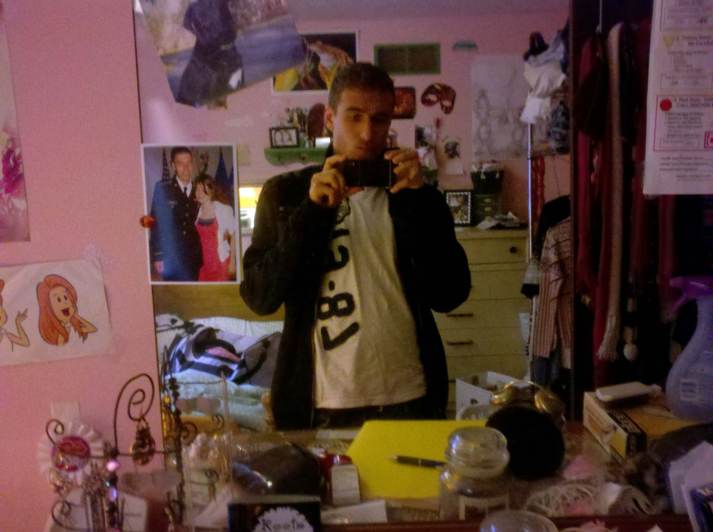
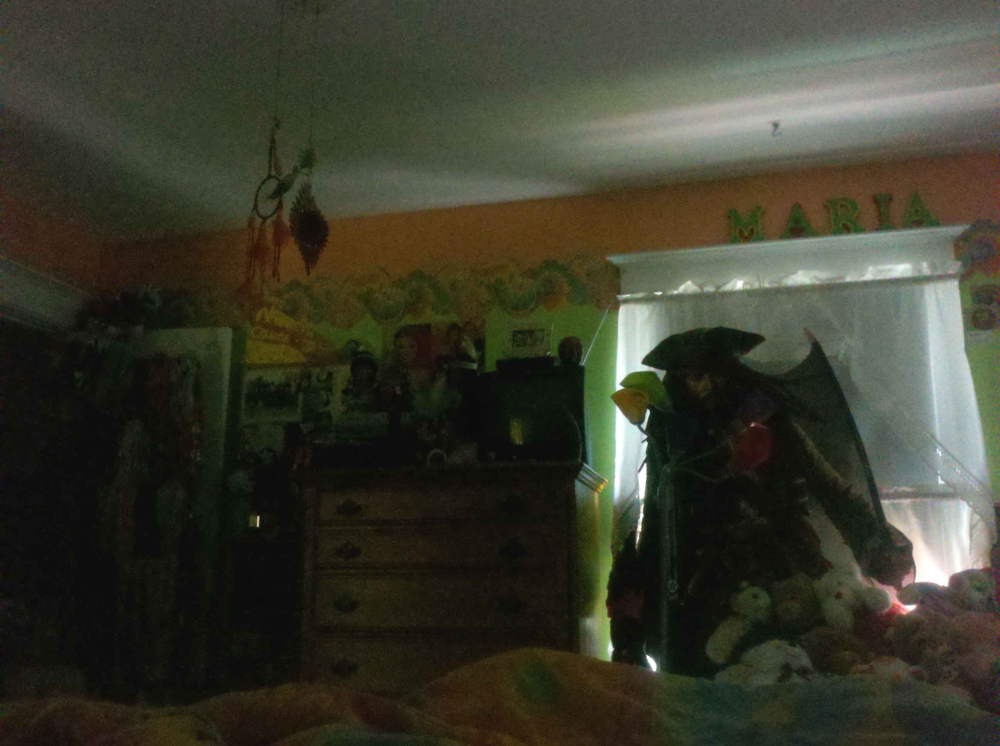

Journal
Monday, June 13, 2011
Rachael comes over and uses my fake Facebook account, "Miranda Longhini," as a cover, saying she was doing her hair. While Rachael was over at my house, lying down and cuddling as always, she gets a call from John, and she tells me she wants him to know that she is with Miranda. So then I think of an idea and run next door to my neighbor's house and talk to my neighbor Dana, who is 19, and ask her to pretend to be a girl named Miranda who is Rachael's friend, so that John can talk to her. She had been putting him off by telling John that she was in the shower, but now that we were both outside and Dana was briefed on what to say, Rachael yells, "Hey Miranda," and Dana comes over and talks to John to assure him that she is Miranda and has been Rachael's friend for 3 years and went to beauty school with Rachael. Which to me seems a bit weird, because she never mentioned that name before to John, so he may think that it is bogus. After that we have more time to spend together.
Tuesday, June 14, 2011
Rachael calls me and says she wants to see me, and she's going to tell John she's going to see Phoebe. John asks for a photo of Rachael and Phoebe so he knows she's telling the truth about where she was going. So then Rachael goes to see Phoebe and takes a picture with her, and then we meet at the Wegmans in Penfield and she jumps on my bike and comes to my house. She's upset about John not trusting her, so I help her get her mind off of it by watching some movies. She feels she wants to see blood and gore, so we watch Hellraiser in my bed as we cuddle and kiss. She tells me John may be calling, so she needs to be home around 11:30, so I take her to her car at 11:15 PM and we kiss and say goodnight.
Wednesday, June 15, 2011
I have a road test appointment at 9 AM, then after that I call Rachael and we meet at her house, where she's doing some laundry and waiting for a call from John before she can leave. We sit upstairs and talk about stuff as we cut out magazines in her sister Amanda's room, where she tells me it used to be her bed and she's only been with 3 guys on there. I ask about her on the bed and she says, "We won't talk about that," like she always does when she's embarrassed. Her sister Rebecca then gets dropped off around 10:35 AM, then Rachael gets the call from John about ten minutes later, and I wait as I'm on Facebook on her computer waiting to go to the park with her. We leave and go to Linear Park, and she takes many pictures of the park and sends one to John, thus proving she was there. We also take some pictures of us at the park as well:
Then we go back to my house and watch the first of the 3 Twilights (as a side note, Rachael almost looks like Kristen Stewart the way she acts and moves). As we are watching, she sends John more pictures that she took from the park to make him think she's still there. As we are watching the movie we begin to make out and cuddle, and then we are so turned on we both get naked and make love. Then we decide we're hungry and we go to Tully's Sports Bar, where I order a cheesesteak and she gets the buffalo chicken sandwich. Then we go back to my place and watch the second Twilight, and just as last time we both get turned on again as she moans in my ear, because she is always such a flirt. We then go at it again and have amazing sex, and she tells me how the day before she came on the phone when she was with John and all she was thinking about was me inside of her. After that movie is done we get on my bike again and drive to a park in Henrietta and walk for a bit, then we go to the mall on my bike and walk around and look at things in Dick's Sporting Goods, then we share a Chai tea from Starbucks, which was amazing. And we sat next to the fountain and talked, so romantic. We then come back to my place and she thinks she may have to go to a car show with her family but later decides not to. She also has the option of going to Julie and Louie's house, which has been an ongoing routine for her every Wednesday night, but she decides to just relax with me and give me backrubs, and as I give one to her, I then find that massaging her lower back turns her on. She said she was going to be leaving shortly, but after the massage she was so turned on that she said, "Fuck it, let's fuck again," and so we got naked a third time and had sex, and she looks in my eyes and tells me she loves me so much (actually it was just one "so"). After which we relaxed more as it was getting later, and she also cleaned more of my room, and we went to the neighbors and talked with my 19-year-old neighbor Dana, aka Miranda Longhini, as she used her as a cover from Monday. Once it gets later she leaves around 10:30 PM and then comes back to tell me she loves me, and we cuddle a bit more and she leaves, then texts me asking if she can use my friend Lonna Camp as a cover to tell John where she was after being at the park, and so I ask Lonna and she agrees. Lonna then comes over later with some friends and we discuss going to NYC, and I say I want to bring Rachael because I'm crazy about her, and she says that would be fun and all Rachael would have to tell John is that she is going with her friend Lonna.
Thursday, June 16, 2011
Rachael and I decide to meet up at EMS in Pittsford, as she tells John she's back with her friends at around 5 PM. When she gets there I get in her car and she is still talking to John, and he keeps giving her crap about how she had lied to him about Brad (her old boss) whom she slept with 3 times, and about how she had made out with me before (still such a huge lie, because we did so much more). Then she makes up the excuse that my hands were cold and it was nasty to her, which is funny, because every time she comes over she pushes me on the bed, and when she's on top of me, wrapping her arms around me, she squeezes and says "mine" and asks, "Why are we so perfect?" After we went into EMS I bought some climbing equipment so Rachael and I could go climbing safely around Rochester. We then needed to find my friend Lonna so that Rachael could yet again use her as a cover and send a picture to John every hour of them together (which somehow proves to him that she is not with any guys, much less me, Nate, whom John has forbidden her to ever talk to again, much less keep seeing every day).
Friday, June 17, 2011
Rachael and John's one-month anniversary is today. She came over to see me for an hour, just because she missed me. She put on some music and sang to me, and with me. We then went on my bed and made out and talked by the tree swing.
Saturday, June 18, 2011
Woke up later and realized how nice it was outside, and texted my friend Lonna, who said she still wanted to go to NYC. I decided to ask Rachael if she could drive and I would pay for everything. She agreed, and we planned on leaving around 9 PM. Later that day Rachael calls me, crying and shaking, and tells me she can't go. I ask her why and she says she can't say. I realize that it must be because her husband is controlling her yet again, and I tell her that she is her own person and that he does not own her. I then pick up Lonna and we drive out to Rachael's house and convince her to have some fun and go.

We go eat, and then I help Lonna with her laundry at my house, then the three of us leave around 11 PM. While on the way John calls Rachael and she tells him she went, and he becomes angry. As I listen in I can tell that this is hurting Rachael, and I ask Lonna if she would talk to him. She does, and then she tells me that he sounded crazy and said she was not "supposed to go" and that he never agreed to it, which further proves he wants to control her.
Monday, June 20 through 26
Rachael and I continue to hang out and do practically everything together.
Sunday, June 26 and ongoing
On the 26th Rachael told me she would be making a decision between John or myself, and whether or not she would go to Germany with him. She told me she would make the decision by Sunday, the 3rd of July. When the 3rd came along she said she still couldn't decide, as she loves us both and she needs more time.
On June 29th I spent the night while she was house-sitting for her friend Maria.
